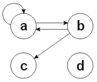
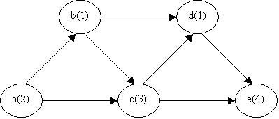

Contents:
We recommend that you read the entire problem set before you begin work.
This assignment gives you the opportunity to design your own specifications for an abstract data type (ADT). You will have the chance to implement your specification and write tests for the implementation. You will also implement and test an algorithm that uses your ADT. Your solution needs not, and should not, depend on any of the previous problem sets.
Update your checkout directory of your repository where your homework is. If you don't remember how to do this, take a look at the Version Control document. Then, work through the problems below.
We have provided the following files:
When you are done with this problem set, you should have committed the following additional files to SVN:
To review, Problem Sets 2, 3, 4, and 6 address different aspects of the design, implementation, documentation, and testing of Husky Maps, a Google Maps-like system for giving directions between locations in Seattle.
In Problem Set 2, you built basic data abstractions such as Route, GeoFeature, GeoPoint and GeoSegment. Problem set 3 involves building a graph abstraction and implementing a shortest path algorithm.
In order to give useful directions, the Husky Maps system needs a means of finding the shortest path between two points. Husky Maps requires abstractions to represent information about streets, the connectivity between streets, and possible paths of travel. While the next problem set (ps4) will deal with creating data structures to represent the streets themselves, this problem set will focus on developing the ability to find the shortest path between two points.
To do so, Husky Maps will need a graph abstraction to represent connectivity, a path abstraction to describe the cost of traveling a particular course, and a path-finding algorithm to search for the shortest possible path.
While we do not specify the names, method signatures, or specifications of your graph or path-finding abstractions, we do provide a specification of Path and provide you with a file format for your testing driver. The testing driver will execute a script of commands and output results to standard output.
Husky Maps represents street connectivity with a directed graph. You will implement a generic graph representation which can be used for different purposes, including Husky Maps's.
A directed graph consists of a set of nodes some of which may be connected by edges. In a directed graph, the edges have direction: node B might have an edge to node C, but node C is not necessarily connected to node B. For our purposes there cannot be more than one edge from a given node to another given node, but there can be an edge from A to B and an edge from B to A.

A simple directed graph with four nodes.
The children of node B are the nodes to which there is an edge from B. In the example above the children of B are A and C. Similarly, the parents of B are the nodes from which there is an edge to B. In the example above B only has one parent, A.
Node-weighted means that the nodes in our graphs will carry some cost value with them, representing the amount it costs to pass through that node.
Conceptually, a graph consists of nodes and of edges that connect the nodes. (In practice an implementation often represents the graph in a rather different manner than that, however.) Often, a node is an object of some sort, and the edges are references to other nodes. However what those nodes and edges represent may vary: see Nodes represent streets below. If you have any questions regarding the the definition of a graph, you should start by looking here, then if you still have a question ask one of the TA's.
In Husky Maps's graph representation, streets are nodes and connections between streets (intersections) are represented by edges between them in the graph. This has a number of benefits over the alternative approach (in which nodes represent intersections and edges represent streets); here we list just a few of them.
Read the path-finder pseudocode and test script file format below and list all the operations that the algorithm and test files perform on graphs. List these operations in ps3/answers/problem1.txt.
In order to implement the path-finding algorithm, your graph must support at least these operations. However, there may be no motivation for it to support more than that; for this problem set (and in general!), it is better to design a minimal than a maximal API. In the real world, you can always add methods later (though in some cases clients may be unhappy if obvious ones are not provided). However, you can never remove them from a published API, and such methods may over-constrain the implementation in the future.
Design an abstract data type representing a directed, node-weighted graph. You should begin by considering what sorts of methods and operations you feel you should include in your graph abstraction (see the hints section). Start from the list of requirements that you created in problem 1. (Your graph specification should not ape the test script file format, which is intended for a different purpose. For example, if your specification of graphs includes a name for the graph, then there is something wrong with your design.)
Write a specification for each method you decide to support using the format and notation we have been using in CSE 331 (in particular, remember to include requires/effects/modifies clauses in your Javadocs). You can write this anywhere; you will eventually copy it into a file called Graph.java. If you are in doubt about how to write and generate Javadocs, refer to the CSE 331 Class and Method Specifications. After finishing your specification, it is good practice to write empty implementations of all operations you decide to support (also called stubs), so that you can write client code and tests for your Graph before you actually implement it.
Now, create a skeleton implementation in a Graph.java file. Include good comments from your specification, including appropriate javadoc tags such as @requires or @modifies. To create a skeleton implementation, make the body throw an exception, as you have seen in files that the staff provided you in past problem sets. (Alternately, you can return dummy values (such as null or 0.0) from methods that have a non-void return type, but that is possible to forget.) The skeleton implementation will compile, but will not pass tests.
To allow for a general purpose abstraction, any cost (weight) information should be stored directly in the object associated with each node. That is, the Graph itself should not, for example, store a separate map of cost values for its nodes. Note that edge weights are not necessarily easy to support here, but we are designing our abstraction with a node-weighted graph in mind, and future problem set will only require node weight functionality. (Remember, nodes correspond to streets, and edges to intersections.) Nonetheless, if, for whatever reason, you want to support edge costs, keep in mind that you might need to modify the shortest paths algorithm later in this problem set, as it was written for a node-weighted graph.
Furthermore, the Graph abstraction should not assume that node objects are of any particular runtime type. In fact, your Graph data type's operations should be valid on nodes of any type, including Object; you should use Java's generic type system to accomplish this goal.
Please include in your turnin a brief description (one to two sentences for each operation) of why you included the operations you did and why you feel they are a sufficient interface to a graph. This should be placed in ps3/answers/problem2.txt.
Hint: We recommend that you not specify a stronger equals method than the one defined in Object (which tests object identity); neither this problem set nor any future one will require you to compare graphs to each other.
Write a black-box test suite for your Graph specifications. Although some initial test cases are provided, you will have to write your own test cases. Do not attempt to run your tests until you have completed Problem 4.
As in previous problem sets, you will write JUnit unit tests for the methods of your Graph class. You should write your unit tests in one or more JUnit test classes and add them to test/ImplementationTests.java (because they are based on your implementation, not on a staff-provided specification).
In addition to JUnit tests, you will construct additional test cases in the format specified in the Test Script File Format section. Each test case should consist of a "test" file containing a series of commands, and an "expected" file containing the output that the commands should produce. The file names should start with "p3" and have the same base name but end with ".test" and ".expected" respectively. For example, you may have a command file named "p3TestAdd.test" with expected output in "p3TestAdd.expected". Your test file names should be informative, and the tests should have comments that make the purpose of each test clear. These files must be in the test directory alongside ScriptFileTests.java. When you run ScriptFileTests (which is also run by SpecificationTests), it will find all of the test files in that directory and run them, saving their output as "p3TestAdd.actual" (for example). It then compares the actual file to the expected file and fails if they are different. (Hint for Eclipse users: the actual file may not show up in the PackageExplorer until you relaunch Eclipse or select Refresh (F5).)
It is important to check every aspect of the output files to make sure that you tests are running correctly. This includes whitespace.
Include with your test cases a few paragraphs of documentation explaining your testing strategy. Place this writeup in ps3/answers/problem3.txt. Remember, any tests you add to SpecificationTests should satisfy the staff-provided specification; in other words, they must be valid tests for any other student's implementation for this problem set. Any other tests should go in ImplementationTests. This implies that unit tests for methods that are specific to your implementation, even if you have declared those methods to be public and have written Javadoc specifications for them, should go in ImplementationTests.
For turnin, you are required to commit your updated versions of the provided test classes and any new JUnit test classes you may have added (and call from either ImplementationTests or SpecificationTests), along with the .test and.expected files.
The testing driver PS3TestDriver should read input from standard input or a specified file using the format described under the Test Script File Format section and print its results to standard output. In order to help you parse the input file format, we have provided a skeleton implementation of the parser. You should fill in this file with your own code. Please be sure to use the PrintWriter stored in the output field in the tester to print the desired output.
When searching for the best means of travel between two points, Husky Maps will attempt to minimize the distance traveled. A generic shortest path algorithm, on the other hand, attempts to minimize some arbitrary cost function of the route traveled. Since the Graph abstraction is generic and can support any type of node, you need an abstraction to represent the cost of some path through the graph. The Path interface provides an abstraction for both representing a given path and for obtaining the cost of that path.
Path is a Java interface, not a class: that is, it just specifies a set of required methods, cannot be directly instantiated, and provides no code to classes which implement it. By separating the notion of a Path (through the use of a Java interface) from the generic Graph abstraction, graphs with any types of nodes can be searched on as long as an appropriate implementation of the interface is provided.
You will not be implementing this algorithm until problem 8. Do not begin implementing it yet!
Most shortest path algorithms are written for graphs in which the weights (costs) are associated with edges; an example is Dijkstra's algorithm, which you can find in any algorithms textbook (for instance, Introduction to Algorithms by Cormen, Leiserson, Rivest, and Stein).
Since the graphs we are dealing with are node-weighted, we provide a shortest path algorithm for you to use which can handle node-weighted graphs. Here is a modified version of Dijkstra's algorithm that finds the shortest path from any of a set of nodes starts to any of a set of nodes goals in a node-weighted graph. This algorithm is called a "greedy" algorithm because it never needs to recompute or reconsider information.
It is important that your path-finding code works between sets of start and destination nodes, as opposed to a single start and single destination node. This functionality will be necessary in future problem sets.
The following modified version of Dijkstra's algorithm has been
written up in a pseudo-code fashion which, while not executable,
should be easy to read, understand, and translate to Java. The
notation [a,b,c] stands for the three-element sequence
consisting of a, b, and c;
here, we use it to represent a path. When applied to sequences, "+"
means concatenation; for instance, [a,b] + [c,d] =
[a,b,c,d]. If m represents a map, then m(key)
represents the value associated to key by the Map m.
// Return a shortest path from any element of starts to any
// element of goals in a node-weighted graph.
Algorithm node-weighted-shortest-path(Set starts, Set goals) {
// maps nodes -> paths
Map paths = { forall start in starts | (start, [start]) }
// The priority queue contains nodes with priority equal to the cost
// of the shortest path to reach that node. Initially it contains
// the start nodes.
PriorityQueue active = starts
// The set of finished nodes are those for which we know the shortest paths
// from starts and whose children we have already examined.
Set finished = { }
while active is non-empty do {
// queueMin is the element of active with shortest path
queueMin = active.extractMin()
queueMinPath = paths(queueMin)
if (queueMin in goals) {
return queueMinPath
}
// iterate over edges (queueMin, c) in queueMin.edges
for each child c of queueMin {
cpath = queueMinPath + [c]
if (c not in finished) and (c not in active) {
paths(c) = cpath
insert c in active with priority equal to cpath's cost
}
}
insert queueMin in finished
}
// execution reaches this point only if active becomes empty
return No Path Exists
}
This algorithm uses a priority queue, a collection data structure that supports inserting elements and extracting the highest-priority element. (we use path costs as priorities, so shorter paths have higher priority.) Note that java.util.PriorityQueue does not let you input the priority of its elements. Instead, it either uses the natural order of its elements or a java.util.Comparator to decide which elements are on top of the queue. Thus, you will either have to implement a wrapper class for your nodes that can be also hold the length of the shortest path, or you may decide to insert paths, instead of nodes, in the priority queue.
The algorithm keeps track of two disjoint collections of nodes. One collection contains "finished" nodes for which we know the shortest path from starts, and we have already examined all edges that leave the node. The other set contains "active" nodes for which we know the shortest path from starts, but we have not yet considered paths that extend it. The paths map associates each active node with the shortest path from starts to that node.
A key property of this algorithm is that if x is a finished node, and y is not a finished node (either it is active, or we don't know the shortest path yet), then the length of the shortest path from starts to x is no more than the length of the shortest path from starts to y.
The algorithm starts with a set of active nodes starts, each element of which is associated with a path consisting of just that node. When any of the nodes contained in goals is reached, the algorithm terminates and returns the associated path with that element in goals.
The basic step of the algorithm (which is repeated over and over) is to find, in the set of active nodes, the one for which the associated shortest path has lowest total weight. Call this node queueMin. Now consider every edge that leaves queueMin; say that edge goes to the child c. If c is finished or active, ignore the (queueMin, c) edge, because we already know of a shorter path to c than the one that goes through queueMin. Otherwise, add c to the collection of active nodes, and associate with it the path cpath which extends the path associated to queueMin by adding c at the end. cpath is the shortest path from starts to c. After all the edges leaving queueMin have been examined, move queueMin from the active collection to the finished collection.
Consider the following graph:

The nodes a, b, c, d, and e have weights 2, 1, 3, 1, and 4, respectively. We want to find the shortest path from a to e.
Initially:
paths = { (a, [a]) }
active = { a }
finished = { }
|
Remove a from active; its path has cost 2. Consider each neighbor of a: add b to active set paths(b) = [a,b] add c to active set paths(c) = [a,c] Add a to finished. |
Now: paths = { (a, [a]), (b, [a,b]), (c, [a,c]) } active = { b, c } finished = { a } |
|
Remove b from active; its path has cost 3, which is the lowest in active. Consider each neighbor of b: do not add c to active, as c already appears in active add d to active set paths(d) = [a,b,d] Add b to finished. |
Now: paths = { (a, [a]), (b, [a,b]), (c, [a,c]), (d, [a,b,d]) } active = { c, d } finished = { a, b } |
|
Remove d from active; its path has cost 4, which is the lowest in active. Consider neighbor of d: add e to active set paths(e) = [a,b,d,e] Add d to finished. |
Now: paths = { (a, [a]), (b, [a,b]), (c, [a,c]), (d, [a,b,d]), (e, [a,b,d,e]) } active = { c, e } finished = { a, b, d } |
|
Remove c from active; its path has cost 5, which is the lowest in active. Consider neighbor of c: d in finished, e in active, so don't add neighbors Add c to finished. |
Now: paths = { (a, [a]), (b, [a,b]), (c, [a,c]), (d, [a,b,d]), (e, [a,b,d,e]) } active = { e } finished = { a, b, d, c } |
|
Remove e from active; its path has cost 8, which is the lowest in active. e is in goals, so we return its path [a,b,d,e] |
DONE : paths = { (a, [a]), (b, [a,b]), (c, [a,c]), (d, [a,b,d]), (e, [a,b,d,e]) } active = { } finished = { a, b, d, c } e would have been added but we return |
Notice that the algorithm actually calculates the shortest route from node a to all other nodes until it reaches a goal node. This information is stored in the paths structure.
The algorithm shown is capable of finding all the shortest paths given multiple start nodes and multiple destinations. Husky Maps uses this capability because different directions of a street are represented as different nodes.
Please respond to the following questions regarding the algorithm presented above. Place your answers in ps3/answers/problem6.txt.
Question 1: In the priority queue active, an element node x's priority is the cost of the shortest path to x. Suppose the algorithm instead uses node x's cost as its priority. Explain in a paragraph why this is incorrect. In addition, give an example of a node-weighted graph for which the modified algorithm gives a wrong result.
Question 2: A typical implementation of edge-weighted shortest path finding looks like this:
// Return a shortest path from any element of starts to any
// element of goals in an edge-weighted graph.
// THIS IS NOT THE ALGORITHM YOU NEED TO IMPLEMENT; you
// should implement the node-weighted version.
Algorithm edge-weighted-shortest-path(Set starts, Set goals) {
// maps nodes -> paths
Map paths = { forall start in starts | (start, [start]) }
// The priority queue contains nodes with priority equal to the cost
// of the shortest path to reach that node. Initially it contains
// the start nodes.
PriorityQueue active = { forall start in starts : start with cost 0 }
// The set of finished nodes are those for which we know the shortest paths
// from starts and whose children we have already examined.
Set finished = { }
while active is non-empty do {
// queueMin is the element of active with shortest path
queueMin = active.extractMin()
queueMinPath = paths(queueMin)
if (queueMin in goals) {
return queueMinPath
}
// iterate over edges (queueMin, c) in queueMin.edges
for each child c of queueMin {
cpath = queueMinPath + [c]
if ((c not in finished) and
((c not in active) or (cost of cpath < cost of paths(c)))) {
paths(c) = cpath
insert c in active with priority equal to cpath's cost
(if it is already in active, just decrease its priority)
}
}
insert queueMin in finished
}
// execution reaches this point only if active becomes empty
return No Path Exists
}
The major difference between the algorithms is that the edge-weighted version is the condition in bold above: even if c is already in active, this version of the algorithm may have to adjust its cost. Why is this line unnecessary in the node-weighted version?
The testing framework used to test Graph is also used to test PathFinder. Extend the testing framework to support the FindPath command. In order to test the functionality of PathFinder, you should create a set of test cases, similar to what you did in Problem 3, in files called p7[any].test and provide their expected output in p7[any].expected, where [any] is any string. Also include an explanation of your testing strategy. Place this writeup in ps3/answers/problem7.txt.
Depending on your specification, you may or may not feel that the staff-provided file format sufficiently tests your path finder's functionality. Hence, feel free to include additional JUnit tests (adding them to ImplementationTests) that test the specifics of your implementation and include in your writeup why you did or did not find them necessary.
Implement the modified version of Dijkstra's shortest path algorithm described above, and place your source code in a class named ps3.graph.PathFinder. You should also include specifications for any public or protected methods defined in PathFinder.
As mentioned previously, your path finder abstraction should support searching Graphs with arbitrary node types. Therefore, it should obtain a cost metric through the Path interface, as opposed to querying the nodes directly. In order to keep your PathFinder implementation from being dependent on a particular node type you may find it useful to pass in source Paths rather than source nodes.
Please note that you are required to implement a version of Dijkstra's algorithm that is capable of finding the shortest path between a set of starting nodes and a set of ending nodes. An implementation that can only find the shortest path from one single node to another will not be sufficient for your Husky Maps system.
As with Graph, after your implementation of PathFinder, you should think about whether or not your code needs additional tests, and append a discussion of this to your testing strategy writeup from Problem 7 above. Any new tests that you construct should be appropriately added to one of the test suites ImplementationTests or SpecificationTests.
We recommend that your PathFinder uses generics so that any given PathFinder object is specialized to a specific type of node and path. Your declaration should begin with public class PathFinder<N, P extends Path<N, P> > {.
(Hint: you may find it difficult to implement the part of the algorithm near the beginning where you need to make length-1 Paths from the given starting nodes. Because Path is an interface, you can't just write new Path<N,P>(startNode). We recommend researching the Factory Pattern for one way to resolve this issue.)
Look at the implementation of WeightedNodePath. In a file named ps3/answers/problem9.txt, describe in a couple of paragraphs why one might prefer the representation that was chosen over possible alternatives. You should describe at least one alternate representation. You should consider the representation within the context of its expected use in PathFinder.
Did you use Daikon on this problem set? Create a file called problem10.txt in your answers directory and briefly give a specific reason that you chose to use it, or not to use it.
Please answer the following questions in a file named reflection.txt in your answers/ directory.
Please answer the following questions in a file named collaboration.txt in your answers/ directory.
The standard collaboration policy applies to this problem set.
State whether or not you collaborated with other students. If you did collaborate with other students, put their names and a brief description of how you collaborated.
After you receive your corrected problem set back from your TA, you will need to resubmit a corrected version of the code. You will have until Friday, February 11 at 8pm to returnin your code. The returnin script will be enabled a week earlier, at 8pm, February 4.
You will only receive credit if you pass all the tests, and you have a fixed number of trials without penalty. See the returnin331 documentation for details.
Because you and your classmates will have different specifications for the classes in this problem set, it is important that there is a standardized interface to use, and test, your code. To that end, we specify a text-based scripting format used to write instructions that will be executed by your graph and path finder.
The testing script is a simple text file with one command listed per line. Each line consists of words separated by white space. The first word on each line is a command name. The remaining words are arguments to the command and have an interpretation which is dependent on the particular command they follow. Lines that have a hash (#) as their first character are considered comment lines and should be echoed to the output when running the test script. Lines that are blank should cause a blank line to be printed to the output.
The testing script manipulates graphs of WeightedNode elements. Each WeightedNode has a name and a cost. After a WeightedNode is created, it can be referred to later on in the testing file by using its name. We have also provided a WeightedNodePath which implements the Path interface for sequences of WeightedNodes. When the testing driver outputs a node, it should do so by displaying that node's name, which is a String. The name for each Graph is also a String. The testing driver must manage the mapping of names to graphs in addition to the mappings from names to nodes. This can be accomplished by maintaining two HashMaps in the testing driver code. The first HashMap could map names (Strings) to Graphs and the second could be used to map names to WeightedNodes. To simplify the parsing of the file, names of nodes and graphs must contain only alphanumeric characters.
The following is a list of the valid commands, and the meaning of their arguments. Each command has an associated output which should be printed to standard output (typically, the console) when the command is executed.
created graph graphNameIf the graph already exists, the output of this command is not defined.
created node nodeName with cost costIf the node already exists, the output of this command is not defined.
added node nodeName to graphNameIf the node is already in the graph, the output of this command is not defined.
added edge from parentNode to childNode in graphNodeIf the edge already exists, the output of this command is not defined.
graphName contains:and is followed, on the same line, by a space-separated list of the names of all nodes in the graph. The nodes should appear in alphabetical order. There is a single space between the colon and the first node name.
the children of parentNode in graphName are:and is followed, on the same line, by a space-separated list of the names of nodes to which there is an edge from parentNode. The nodes should appear in alphabetical order. There is a single space between the colon and the first node name.
The square brackets indicate optional elements. The square brackets do not appear in the input file, but an arbitrary positive number of from and to nodes may be specified.
This command has no effect on the graph. It finds and outputs the shortest path amongst all of the possible paths from any of the "from" nodes to any of the "to" nodes. The output starts with:
shortest path in graphName:
and is followed, on the same line, by a space-separated list of nodes in the order of traversal from fromX to toY.
If no path exists the output should be:
no path found in graphName
Note that in in the first case, there should be a single space after the colon.
Given the following as input for the testing driver:
# Problem set 3 test script, from ps3 handout CreateNode n1 5 CreateNode n3 1 CreateGraph A AddNode A n1 CreateNode n2 10 AddNode A n2 CreateGraph B ListNodes B AddNode A n3 AddEdge A n3 n1 AddNode B n1 AddNode B n2 AddEdge B n2 n1 AddEdge A n1 n3 AddEdge A n1 n2 ListNodes A ListChildren A n1 AddEdge A n3 n3 ListChildren A n3 FindPath A n3 -> n2
A correct implementation would output the following:
# Problem set 3 test script, from ps3 handout created node n1 with cost 5 created node n3 with cost 1 created graph A added node n1 to A created node n2 with cost 10 added node n2 to A created graph B B contains: added node n3 to A added edge from n3 to n1 in A added node n1 to B added node n2 to B added edge from n2 to n1 in B added edge from n1 to n3 in A added edge from n1 to n2 in A A contains: n1 n2 n3 the children of n1 in A are: n2 n3 added edge from n3 to n3 in A the children of n3 in A are: n1 n3 shortest path in A: n3 n1 n2
The behavior of the testing driver on malformed input files is not defined; you may assume the input files are well-formed.
Since it is possible that your specification throws exceptions for certain inputs, the testing file format provides for one additional feature. If the command in the input file results in an exception, the command, rather than outputting its normal string, should output "Exception: <toString value of exception>". This exception-output behavior is already implemented in the executeCommand method of the provided PS3TestDriver starter file.
In addition, it is possible to have run the PS3TestDriver from the command line. Once you have completed the PS3TestDriver implementation, do a build with ant. Change directories to the root binary directory (that is, in the very base directory of your checkout, there will be a bin directory). Once the bin directory is your current directory (on Linux you can check with a pwd command, windows is a dir command), run:
java ps3.test.PS3TestDriver. Then enter in commands, and the console will echo the results. To stop, press the key combination control-d. (This sends an end of file character to the console).
Problem set 3 does not depend on problem set 2 (though problem set 4 depends on both of them). If you are behind on problem set 2, don't let that stop you from starting problem set 3 (though you will have to work very hard to catch up in the class!).
For both your graph class and your path-finding method, follow this methodology. First, write the specification. After writing the spec, write test cases based on the spec. Only after your test cases are complete should you begin the implementation. This will save time in the long run.
To give you some sense of the kinds of issues you should be considering in your design, here are some questions you might want to consider. These don't in general have simple answers. You'll need to exercise careful judgment, and think carefully about how decisions you make interfere with each other.
entrySet() method of java.util.Map?Make good use of your TA. If you have concrete questions, then take your specification to office hours before going to the lab and get some feedback on your design and style. This is likely to save you a lot of time!
Although it is generally a bad idea to start coding before you have thought deeply, it often makes sense to work incrementally, interleaving design and coding. Once you have a sketch of your specification, you may want to write some experimental code. This should give you some concrete feedback on how easy it is to implement the methods you've specified. You may even want to start at the end, and write the code that uses your type, so that you can be confident that the methods you provide will be sufficient. (This was the point of Problem 1; you should follow this methodology on your own in the future, without an explicit problem to force you to do it.)
This strategy can backfire and degenerate into mindless hacking, leaving you with a pile of low-quality code and an incoherent specification. To avoid that, bear three things in mind. First, you must be willing to start again: experimental code isn't experimental if you're not prepared to throw it away. Second, whenever you start coding, you must have a firm idea of what you're trying to implement. There's no point starting to code to a specification that is vague and missing crucial details. That doesn't mean that your specification must be complete and polished, but it does mean that you shouldn't start coding a method until at least you have its own specification written. Third, you must write down the specification of a method and not just imagine it; it's too easy to delude yourself. Try to write it on paper and mull it over before you start any coding. It's tempting to sit in front of an editor, write some specification as comments, and then start coding around them, but this tends not to be nearly so effective.
It can be difficult to come up with a good test suite. You would like to test a variety of “interesting” graphs, but what are interesting graphs? One possible approach is a “0, 1, 2” case analysis: test scripts with 0, 1, and 2 graphs are interesting; graphs with 0, 1, and 2 nodes and 0, 1, and 2 edges are interesting. For each method, 0, 1, and 2 parameters and 0, 1, and 2 results are interesting; for example: getChildren on nodes with 0, 1, and 2 children, findPath with 0, 1,and 2 start nodes, 0, 1,and 2 goal nodes, and 0, 1,and 2 paths found. This approach, while certainly not required, can give a good way to structure your tests to cover many important cases without having too much redundancy.
This section will list clarifications and answers to common questions about problem sets. We'll try to keep it as up-to-date as possible, so this should be the first place to look (after carefully rereading the problem set handout and the specifications) when you have a problem.